Doldán Lössl
Cerveza artesanal, hecha en casa con paciencia y oficio.
100% Artesanal
3 Variedades
Hecho en casa
Nuestra Historia
"Empecé cocinando cerveza para mí, en casa. Nunca pensé que un día la ibas a poder tomar vos."
En 2006, después de realizar un curso de elaboración de cerveza artesanal, comenzamos a cocinar nuestros primeros lotes en casa, utilizando equipamiento casero y materias primas de la Patagonia. Con mucho esfuerzo y dedicación, participamos en concursos de cerveceros caseros: obtuvimos el tercer lugar con una Kölsch y una mención de honor por una Sweet Stout. Aquellos reconocimientos nos impulsaron a seguir perfeccionando cada receta.
Entonces, elegimos concentrarnos en tres estilos: Stout, Kölsch e IPA Argenta. Lo que nació como una manera de compartir cerveza en cenas, almuerzos y reuniones familiares se transformó en una pasión y en una forma de vida. Elaboramos de manera artesanal, respetando los tiempos y utilizando únicamente ingredientes naturales, sin agregados industrializados, para transmitir en cada cerveza la esencia de la Patagonia argentina.
✦
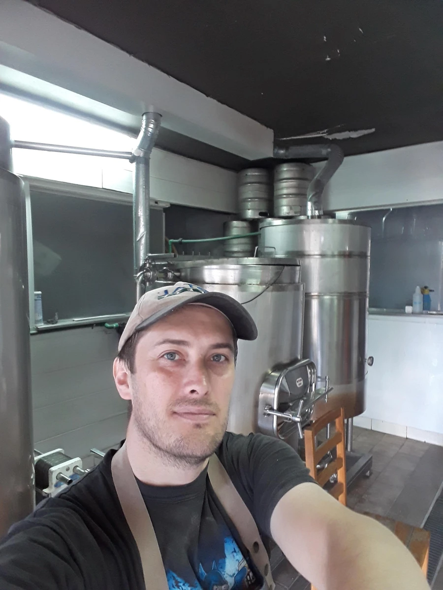
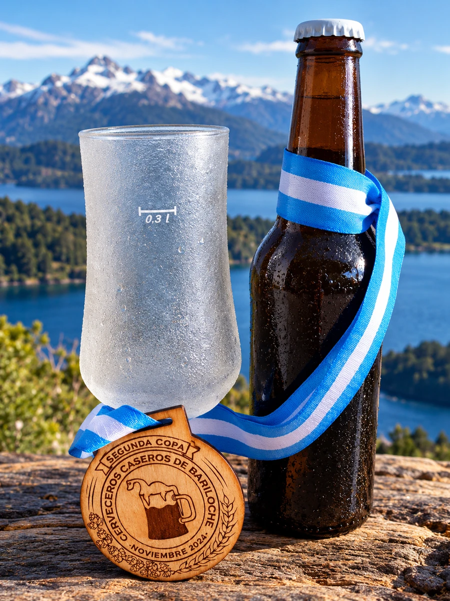
Nuestras Variedades
Stout
La Cream Stout es una versión suave y cremosa de las clásicas Stout británicas.De color negro intenso, destaca por sus notas de café, cacao y chocolate.De cuerpo sedoso, combina un dulzor sutil con un tostado equilibrado.Una Stout elegante, intensa y muy fácil de disfrutar.
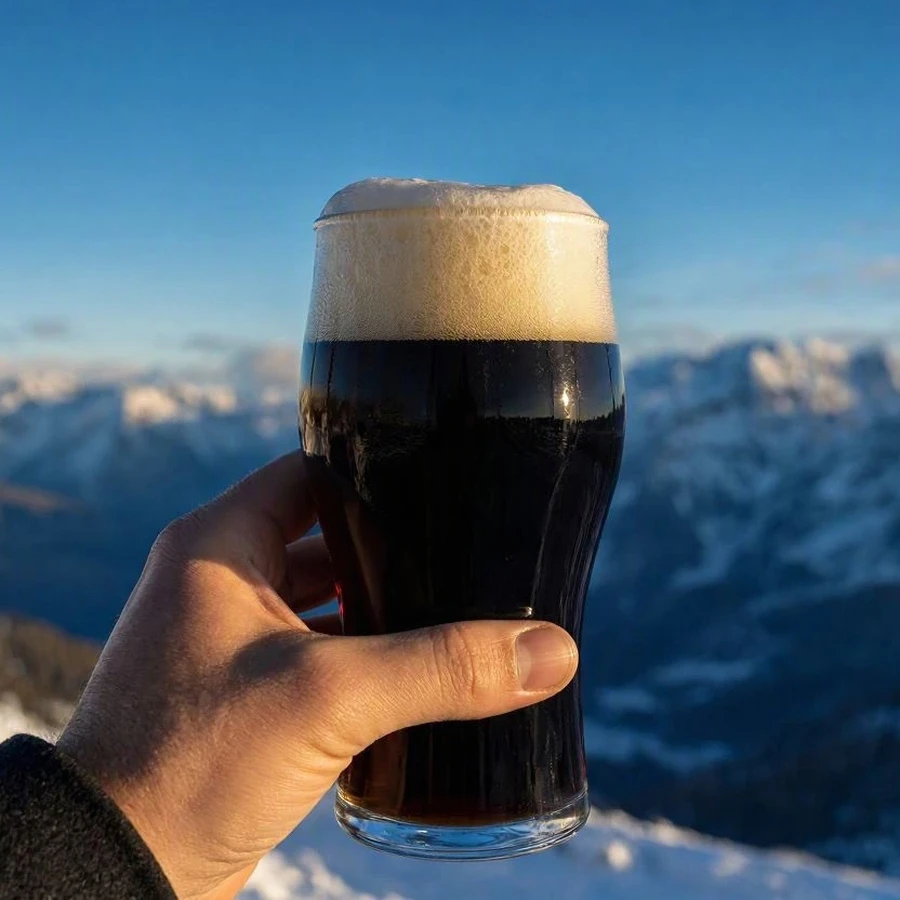
✦
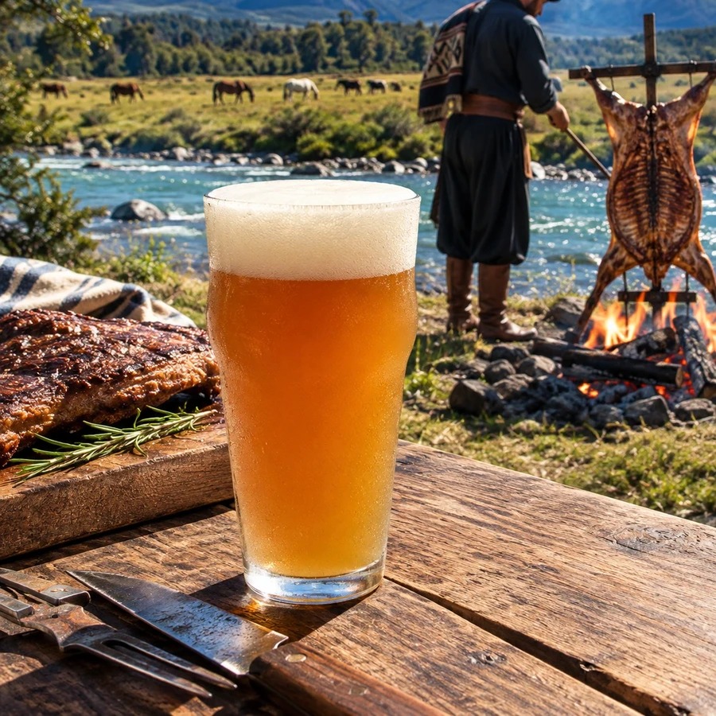
Ipa Argenta
Nacida en Argentina como el primer estilo autóctono reconocido por la BJCP, esta cerveza rinde homenaje a los lúpulos locales. De color dorado a ámbar claro, destaca por un perfil marcadamente frutal y resinoso con notas a frutas de carozo y cítricos. En boca ofrece un amargor firme pero equilibrado por la malta, logrando un cuerpo medio y gran tomabilidad.
✦
Kölsh
La Kölsch es una cerveza originaria de Colonia, Alemania, nacida como respuesta a la tradición cervecera de la región. De color dorado brillante, es ligera, limpia y delicadamente afrutada. Combina la suavidad de una lager con la expresión aromática de una ale. Su final es seco, refrescante y de amargor sutil, ideal para beberla bien fría.
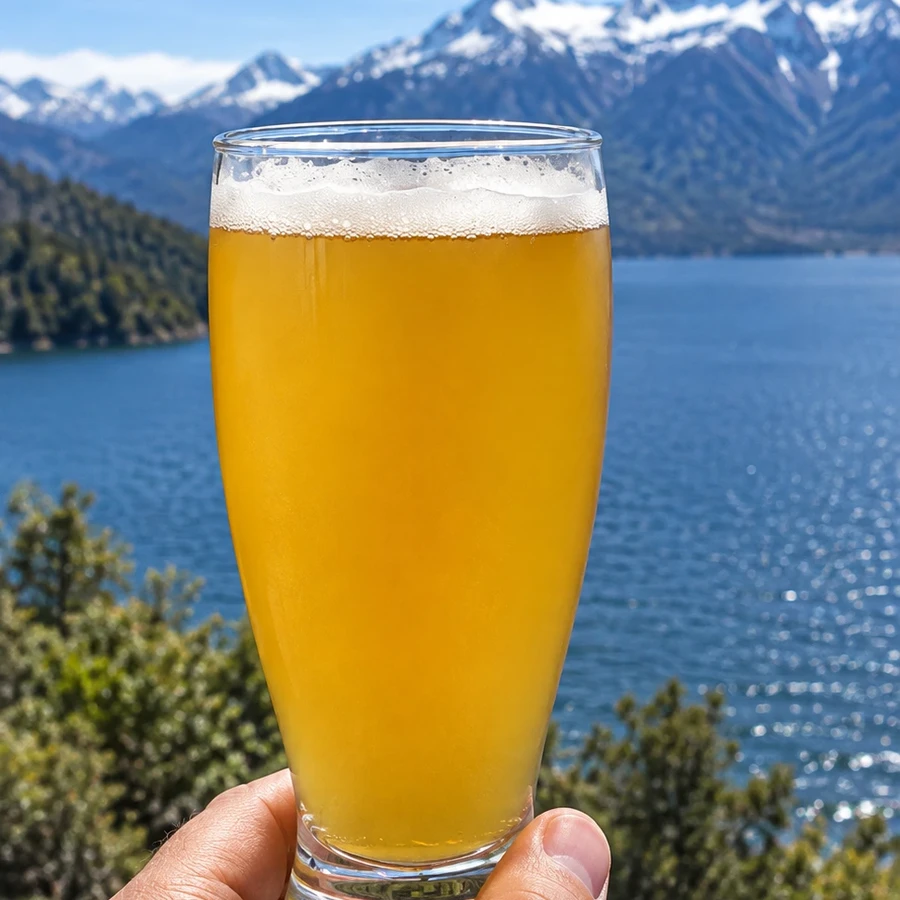
Galeria
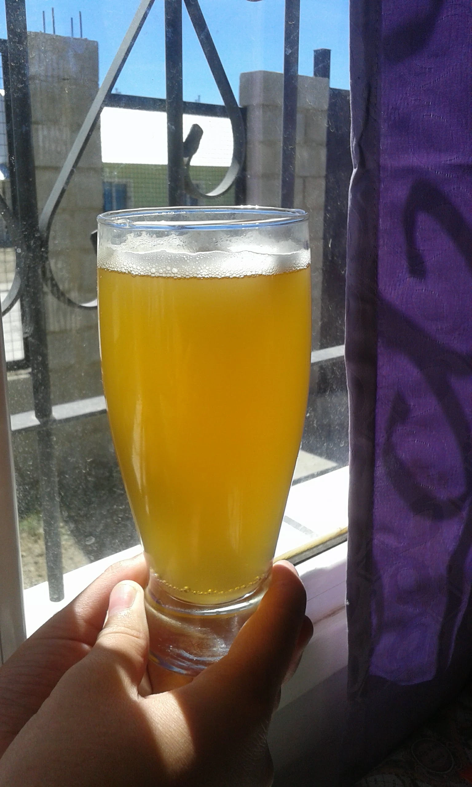
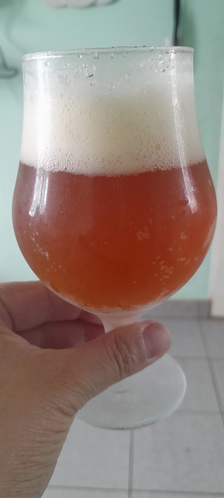
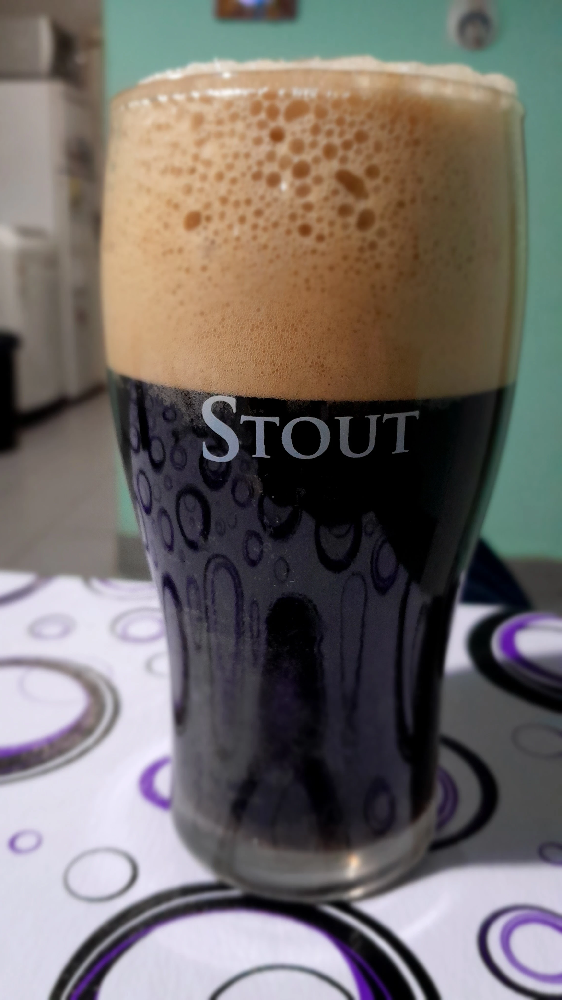
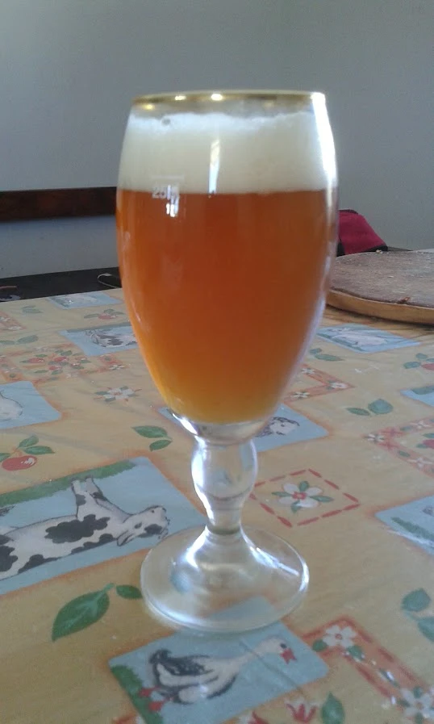
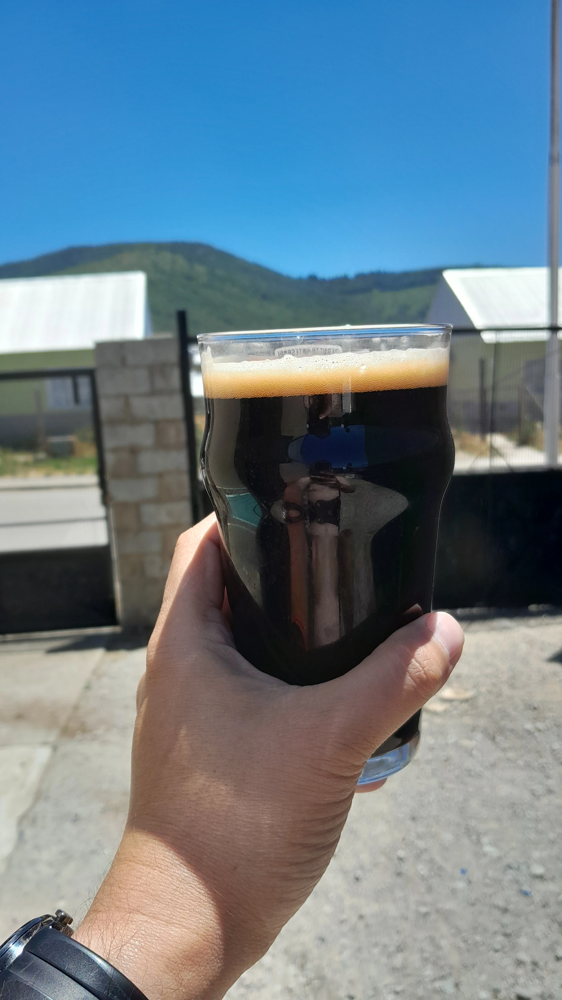
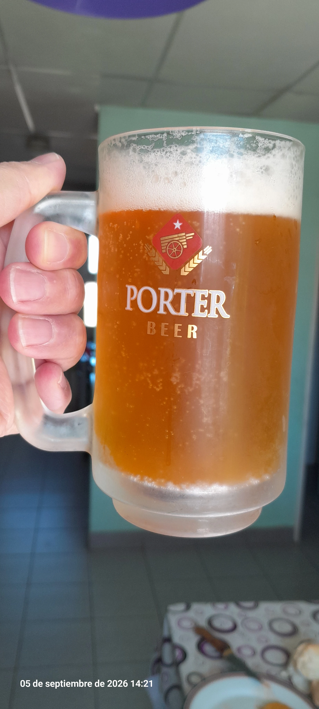